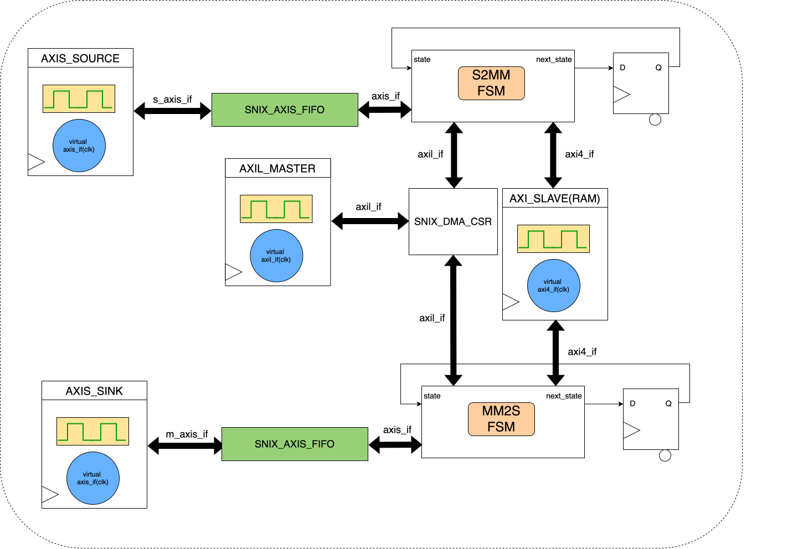
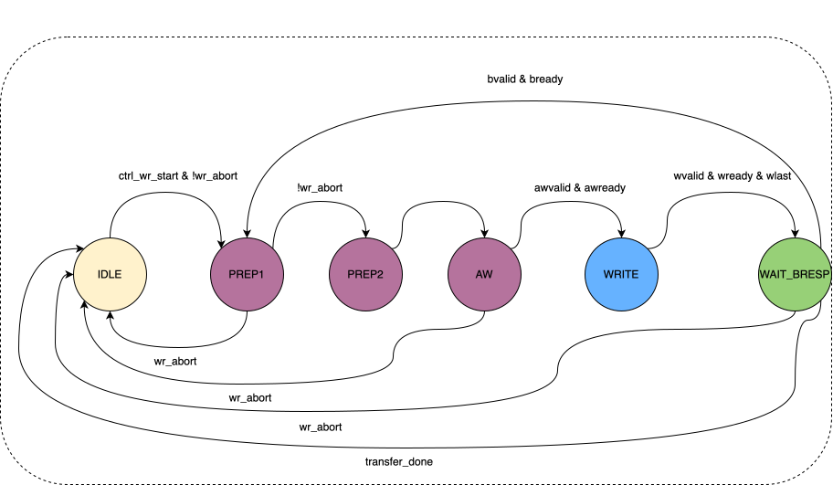
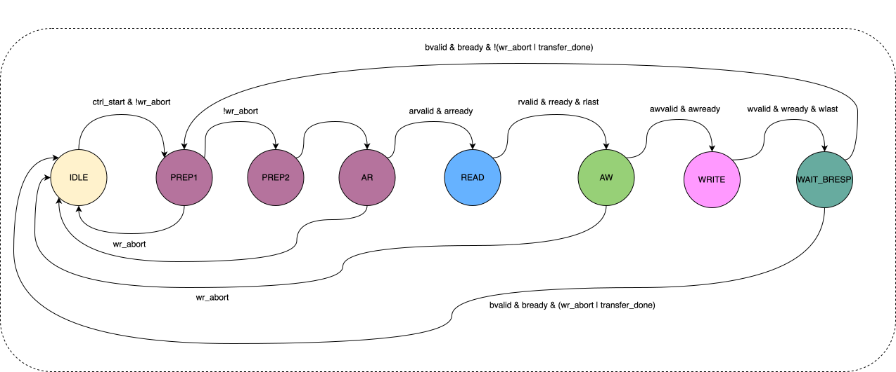
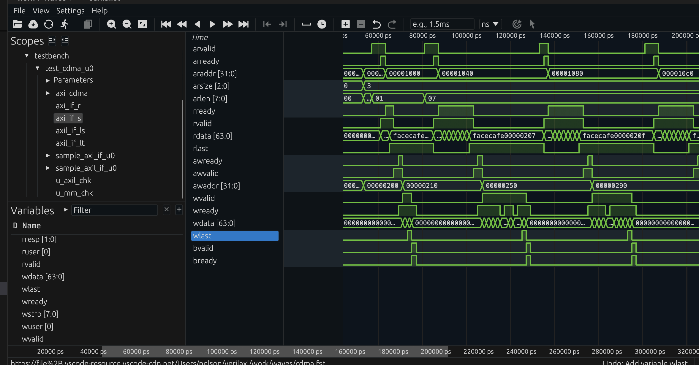

A processor moving data between a peripheral and memory one word at a time is wasteful: the CPU stays busy for the entire transfer and burns cycles on work that is fundamentally repetitive. A Direct Memory Access (DMA) engine fixes this by taking ownership of the data movement itself. Software programs the source and destination addresses, the transfer length, and a few control bits, then the DMA moves the payload autonomously while the CPU continues with control, scheduling, or higher-level signal-processing tasks.
This matters in many real systems. Ethernet subsystems use DMAs to move packet buffers between MACs and memory with minimal software involvement. Image-processing and optical-flow pipelines use them to stream pixels, tiles, and intermediate feature maps between accelerators and external memory. The same idea appears anywhere a design must move a large amount of structured data efficiently. This post explains how a streaming DMA and a central DMA (CDMA) are implemented in SystemVerilog using AXI4, using verilaxi as a reference.
The two DMA engines in verilaxi
Verilaxi contains two independent DMA IP blocks, each aimed at a different system-level use case.
snix_axi_dma is a streaming DMA. It moves data between an AXI4-Stream interface and AXI4-Full memory using two independent engines: S2MM (Stream-to-Memory-Mapped) and MM2S (Memory-Mapped-to-Stream). This is the pattern commonly used in FPGA and SoC datapaths with high-throughput peripherals: an Ethernet MAC, a camera front end, or a video-processing stage produces an AXI stream, and the DMA writes it to external memory. The MM2S engine performs the inverse operation, reading from memory and producing a stream for a downstream accelerator or display pipeline.
snix_axi_cdma is a central DMA. It performs memory-to-memory copies over a single AXI4-Full port with no stream interfaces. This is useful when data must be rearranged or relocated entirely inside the memory system, for example when staging image tiles, reorganising buffers for optical-flow processing, or copying packet payloads between software-visible queues. Software programs a source address, destination address, and length; the CDMA reads from the source and writes to the destination.
In short, the two engines solve related but different problems. A streaming DMA is the natural choice when one side of the transfer is a live data stream: video sensors, Ethernet MACs, DSP chains, or CNN accelerators that consume and produce AXI-Stream data. A CDMA is the better fit when both sides already live in memory and the system simply needs bulk relocation, staging, or reordering. Many practical designs need both: the streaming DMA brings data in and out of memory, while the CDMA reorganises that stored data between processing stages.
Figure (1) shows the top-level block diagram of the streaming DMA.
{kind=link}

Figure (1): The streaming DMA (snix_axi_dma). Software configures the engines via the AXI-Lite CSR. S2MM writes an incoming stream to memory; MM2S reads memory and produces a stream.
The S2MM engine
The Stream-to-Memory engine accepts data from an AXI4-Stream slave port and writes it to memory via AXI4-Full write channels (AW, W, B). An internal AXI-Stream FIFO decouples the stream side from the memory bus: the stream can keep running even if the memory bus stalls, up to the FIFO depth.
Figure (2) shows the S2MM FSM state diagram.
{kind=link}

Figure (2): S2MM FSM. PREP1 and PREP2 pipeline the 4KB boundary check. AW drives the write address channel; WRITE drains the internal FIFO to the W channel; WAIT_BRESP waits for the B response and decides to loop or stop.
The two PREP states exist to pipeline the burst calculation. Computing whether the next burst crosses a 4KB boundary — which requires comparing the address and length against a page boundary — would be a long combinational path if done in a single cycle. Splitting it across PREP1 and PREP2 keeps the critical-path depth minimal.
The timing benefit comes from separating two different jobs. PREP1 calculates the page-boundary information: where the next 4KB page begins and how many bytes remain before that boundary. PREP2 then decides how much of the pending transfer can be issued in the next burst and updates AWLEN. If both steps were packed into one cycle, the address arithmetic, comparison, clipping logic, and burst-length update would all sit on the same path into the AW channel registers.
That may still work at low frequency, but in a realistic DMA the boundary arithmetic often sits on the control-path critical path. Pipelining it across two states gives the synthesis tool a shorter combinational cone per cycle, which makes timing closure easier without changing the external DMA behaviour.
// Simplified S2MM PREP1 — compute bytes remaining to 4KB boundary
always_ff @(posedge clk) begin
if (state == AW) begin
// Address of the first byte past the next 4KB boundary
next_4k_boundary <= {axi_addr[ADDR_WIDTH-1:12] + 1, 12'h000};
bytes_to_boundary <= next_4k_boundary - axi_addr;
end
end
// PREP2 — clip the burst length at the 4KB boundary
always_ff @(posedge clk) begin
if (state == PREP1) begin
if (pending_bytes <= bytes_to_boundary)
burst_actual_bytes <= pending_bytes; // fits within 4KB page
else
burst_actual_bytes <= bytes_to_boundary; // clip to boundary
awlen_r <= (burst_actual_bytes >> ctrl_wr_size) - 1;
end
end
Two-stage burst calculation in S2MM (simplified from rtl/axi/snix_axi_s2mm.sv)
The AWLEN update is worth calling out explicitly. In AXI4, AWLEN is the number of beats in the burst minus one. So on a 64-bit interface, if the clipped burst length is 16 bytes, the burst contains two beats and AWLEN = 1. If the clipped burst length is only 8 bytes, then the burst is one beat and AWLEN = 0.
Using the numerical example below with a start address of 0x0000_0FF0 and a 22-byte transfer:
- Before the 4KB boundary, 16 bytes fit, so
burst_actual_bytes = 16andAWLEN = (16 / 8) - 1 = 1. - After the boundary, 6 bytes remain. The DMA still issues one final beat, so the burst is clipped to one beat and
AWLEN = 0, withWSTRBmarking only the valid six bytes.
This is exactly why the PREP logic and the partial-strobe logic belong together conceptually: PREP decides how many beats can legally be issued, and the strobe logic ensures that the last issued beat writes only the bytes that actually belong to the transfer.
The 4KB boundary rule
The AXI4 specification forbids a burst from crossing a 4KB page boundary. This rule exists because interconnect fabrics map 4KB pages to potentially different slaves; a burst spanning a boundary would require the interconnect to split it, which most implementations do not support. A DMA that ignores this rule will fail silently on any real system with a non-trivial memory map.
The S2MM engine handles this by running each burst through the two-stage PREP pipeline before issuing the AW handshake. If the programmed burst would cross a 4KB boundary, the engine clips the burst to the boundary, completes that burst, and then starts a new burst at the next page. This continues until all ctrl_wr_transfer_len bytes have been written. The SVA checker in axi_4k_checker.sv verifies that no AW address ever violates this rule during simulation.
An illustrative test case is the DMA regression with TESTTYPE=3, which combines a 4KB crossing with a transfer whose total byte count is not an integer multiple of the beat width. A concrete example is shown in Table (1).
| Parameter | Value | Meaning |
|---|---|---|
| Data width | 64 bits | 8 bytes per beat |
| Start address | 0x0000_0FF0 | 16 bytes before the next 4KB boundary at 0x0000_1000 |
| Total transfer | 22 bytes | Crosses the page boundary and ends with a partial beat |
| Bytes before boundary | 16 bytes | Exactly two full 8-byte beats fit in the first page |
| Bytes after boundary | 6 bytes | Requires a final partial beat in the next page |
Table (1): Numerical example of a DMA transfer that crosses a 4KB boundary
In this case the DMA must issue two full beats up to address 0x0000_0FFF, then restart at 0x0000_1000 for the remaining 6 bytes. A single burst covering all 22 bytes would violate AXI4, because it would cross the page boundary.

Figure (3): DMA simulation waveform. The engine issues multiple bursts, automatically splitting at 4KB boundaries.
Partial write strobe
When the total transfer length is not a multiple of the beat width, the final beat must use a byte-accurate write strobe (wstrb) so that only valid bytes are committed to memory. The engine computes the number of valid bytes in the last beat and constructs a strobe mask:
// Partial last-beat strobe
logic [DATA_WIDTH/8-1:0] last_beat_strobe;
int unsigned remaining_bytes;
assign remaining_bytes = ctrl_wr_transfer_len % (DATA_WIDTH / 8);
assign last_beat_strobe = (remaining_bytes == 0) ? '1 :
((1 << remaining_bytes) - 1);
assign s2mm_wstrb = wlast ? last_beat_strobe : '1;
Partial write strobe for the last beat of a transfer
Continuing the same numerical example, the write strobes evolve as shown in Table (2).
| Beat | Address range | Valid bytes | WSTRB |
|---|---|---|---|
| 0 | 0x0FF0 - 0x0FF7 | 8 | 8'b1111_1111 |
| 1 | 0x0FF8 - 0x0FFF | 8 | 8'b1111_1111 |
| 2 | 0x1000 - 0x1007 | 6 | 8'b0011_1111 |
Table (2): Beat-by-beat strobe behaviour for a 22-byte transfer on a 64-bit interface
The final beat must not write all eight bytes, because only six bytes remain. If the DMA got this wrong and drove 8'b1111_1111, it would silently overwrite two bytes beyond the intended end of the buffer.
Transfer length and throughput
Once the burst structure is understood, it becomes easy to estimate transfer time and throughput. A first-order throughput estimate for an AXI burst engine is
throughput ~= bytes_per_beat * accepted_beats_per_cycle * clock_frequency
On a 64-bit data path, bytes_per_beat = 8. If the bus accepts one beat every cycle at 200 MHz, the ideal streaming bandwidth is
8 bytes * 200e6 = 1.6 GB/s
For a 1 MiB transfer, the ideal data-movement time is therefore approximately
1,048,576 / 1.6e9 ~= 655 us
Of course, real transfers are slower because AW, W, B, AR, and R handshakes are not all accepted every cycle. Boundary splits, response waits, and backpressure all reduce the number of beats actually transferred per cycle.
| Case | Assumption | Estimated throughput on 64-bit @ 200 MHz |
|---|---|---|
| Ideal | 1 accepted beat/cycle | 1.6 GB/s |
| Mild backpressure | 0.8 accepted beats/cycle | 1.28 GB/s |
| Heavy backpressure | 0.5 accepted beats/cycle | 0.8 GB/s |
Table (4): First-order DMA throughput estimates
This estimate is intentionally simple, but it is very useful when reasoning about whether a DMA path can keep up with a video stream, a DSP pipeline, or a CNN tensor feed.
The CDMA: memory-to-memory copy
The central DMA (snix_axi_cdma) uses a single AXI4-Full port for both reading and writing. The MM2MM engine serialises the two phases: the entire read burst completes and fills an internal FIFO before the write burst begins. This simplifies the control path at the cost of bus utilisation — read and write never overlap.
Figure (4) shows the CDMA FSM.
{kind=link}

Figure (4): MM2MM FSM. The read phase (PREP1 → PREP2 → AR → READ) completes fully before the write phase (AW → WRITE → WAIT_BRESP) begins.
Software programs the CDMA through its AXI-Lite CSR. The STATUS register is write-protected and its done bit is cleared automatically when ctrl_start fires, so software does not need to clear STATUS before restarting a transfer.
// Typical CDMA software sequence
write_reg(CDMA_SRC_ADDR, 0x0000_1000); // source
write_reg(CDMA_DST_ADDR, 0x0000_2000); // destination
write_reg(CDMA_NUM_BYTES, 256); // length in bytes
write_reg(CDMA_CTRL, (7 << 6) | (3 << 3) | 0x1); // 8-beat bursts, 8B/beat, start
while (!(read_reg(STATUS) & 0x1)); // poll for completion
// No STATUS clear needed — done bit clears on next ctrl_start
CDMA software sequence
Circular mode
Both S2MM and MM2S support circular mode. When ctrl_wr_circular or ctrl_rd_circular is set, the engine does not stop after completing the programmed transfer length. Instead it reloads the base address and byte count and immediately restarts, enabling continuous ring-buffer operation. Circular mode is exited by writing the stop bit.
Circular mode is especially useful in continuous-stream applications. In video processing, a camera or image sensor may produce pixels continuously while the software stack or downstream accelerator consumes frame buffers at its own pace. In that case, circular mode turns memory into a ring buffer: the DMA keeps writing successive frames or line groups without waiting for software to re-arm every transfer. The same idea is useful in Ethernet receive queues, software-defined radio, and DSP pipelines where data arrives continuously and the system wants a rolling buffer instead of a single-shot copy.
One good way to picture this is a video frame buffer ring. A concrete example is shown in Table (3).
| Frame buffer | Base address | Frame size | Role |
|---|---|---|---|
| A | 0x8000_0000 | 0x0010_0000 bytes | Current write target |
| B | 0x8010_0000 | 0x0010_0000 bytes | Previously captured frame |
| C | 0x8020_0000 | 0x0010_0000 bytes | Next buffer in the ring |
Table (3): Example three-frame circular buffer in memory
Suppose a camera produces one frame every 16.7 ms and each frame occupies 0x0010_0000 bytes. In circular S2MM mode, the DMA writes frame 0 into buffer A, then frame 1 into buffer B, then frame 2 into buffer C. When the programmed frame size has been written, the write address wraps back to 0x8000_0000 and frame 3 overwrites buffer A. At the same time an MM2S engine or software can read the previously buffered frame from B or C. The address restart is not an error here; it is the intended behaviour of a ring buffer.
Non-circular mode is just as important. It is the right choice when a transfer has a clear beginning and end and completion matters as an event: transmit one Ethernet packet, move one CNN tensor tile, copy one DSP input block, or fetch one frame buffer for display. In these cases software usually wants a done flag or interrupt, not an endlessly wrapping engine. One-shot mode is also easier to reason about when memory ownership changes from producer to consumer after each completed transfer.
This also mirrors how many video systems work in practice. Circular mode is ideal while frames are being captured continuously into memory. Non-circular mode is ideal once a complete buffered frame must be processed, copied, or displayed as a bounded job. The same design can therefore use circular streaming for acquisition and one-shot transfers for explicit downstream processing.
So the practical mapping is straightforward:
Streaming DMA + circular mode fits continuous sources and sinks such as cameras, video pipelines, Ethernet RX rings, and long-running DSP streams.
Streaming DMA + non-circular mode fits bounded stream transfers such as packet TX/RX, frame-at-a-time video processing, or explicit accelerator jobs.
CDMA + non-circular mode fits deliberate memory-to-memory copies such as tensor staging, tile rearrangement, packet-buffer relocation, or software-managed frame moves.
CDMA + circular-style operation is less common, but can still be useful for repeated memory-buffer rotation in pipeline-oriented systems.
{kind=link}

Figure (5): CDMA waveform. The MM2MM engine reads from the source address, buffers in the internal FIFO, then writes to the destination.
Running the simulation
# DMA: 4KB boundary test with backpressure
make run TESTNAME=dma TESTTYPE=3 READY_PROB=80
# CDMA: basic aligned copy
make run TESTNAME=cdma TESTTYPE=0
# CDMA: 4KB boundary + partial last beat
make run TESTNAME=cdma TESTTYPE=1 READY_PROB=70
Running DMA and CDMA simulations with verilaxi
The default DMA regression exercises circular mode, while TESTTYPE=3 focuses on the 4KB-boundary and partial-strobe corner case. There is also a dedicated circular test in the testbench that drives multiple frames through the ring and checks that the write and read wrap counters stay in lockstep. That combination is useful because it covers both categories of real bugs: corner cases at transfer boundaries, and long-running errors that only appear after several address wraps.
Backpressure directly affects throughput in these tests. If READY_PROB=100, the AXI slave is always ready and the DMA approaches its ideal burst rate. If READY_PROB=70, then on average only about 70% of the candidate AW, W, or AR cycles are accepted. As a rough throughput model, the effective bandwidth scales with that acceptance rate. So a path that could ideally sustain 1.6 GB/s on a 64-bit, 200 MHz interface may fall toward 1.12 GB/s when the effective beat acceptance is only 70%.
That is exactly why the backpressure tests matter. They are not only checking functional correctness under stalls; they also show how much real throughput the engine preserves once the memory system stops behaving ideally.
Summary
A streaming DMA engine (S2MM/MM2S) moves data efficiently between an AXI-Stream interface and AXI4 memory, while a CDMA engine performs memory-to-memory copies over a single AXI4 port. Together they cover a wide range of practical systems: Ethernet buffering, image and video pipelines, optical-flow accelerators, and general-purpose embedded data movement.
The streaming DMA is best when a live stream meets memory; the CDMA is best when memory must be reorganised without a stream endpoint. Circular mode fits continuous producers and consumers such as video, Ethernet rings, and long DSP pipelines, while non-circular mode fits bounded transfers where software wants explicit completion per job. Both engines must still get the details right: respect the AXI4 4KB boundary rule, generate correct last-beat strobes, and expose a software-friendly control path through an AXI-Lite CSR. Those details are what make the difference between a DMA that works in a toy testbench and one that behaves correctly in a real design. The full RTL for both engines, their CSRs, and integration tests is available in verilaxi.
Read next:
Writing a CSR Block Using AXI-Lite for the software-visible control path behind the engines.
Synchronous and Asynchronous FIFOs for the buffering and clock-crossing pieces that often sit around a DMA datapath.
Checking AXI Protocol with SystemVerilog Assertions for the protocol rules that guard burst length, WLAST, and 4KB splitting.
Implementation pointers in verilaxi: rtl/axi/snix_axi_dma.sv, rtl/axi/snix_axi_s2mm.sv, rtl/axi/snix_axi_mm2s.sv, and rtl/axi/snix_axi_cdma.sv.
References:
[1] ARM. AMBA AXI and ACE Protocol Specification. 2011
[2] Writing a CSR Block Using AXI-Lite — sistenix.com
[3] Synchronous and Asynchronous FIFOs — sistenix.com
Also available in GitHub.